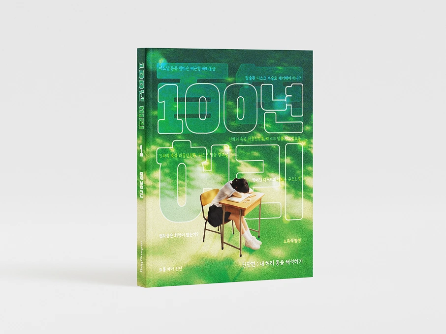
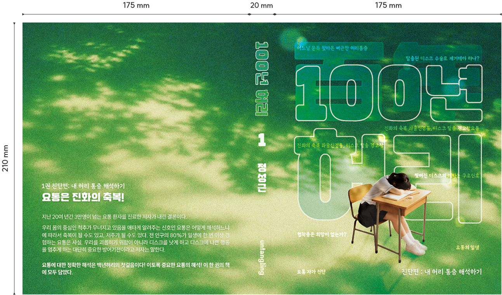

Overview
책의 핵심 메시지를 시각적으로 재해석한 북커버 디자인입니다. 타이포그래피를 중심으로 정보의 전달력을 높이고, 자연광과 컬러를 활용하여 책의 분위기와 메시지를 직관적으로 표현하였습니다.
※일부 이미지 제작에 AI를 활용했습니다.
책의 핵심 메시지를 시각적으로 재해석한 북커버 디자인입니다. 타이포그래피를 중심으로 정보의 전달력을 높이고, 자연광과 컬러를 활용하여 책의 분위기와 메시지를 직관적으로 표현하였습니다.
허리 통증을 단순한 질병이 아닌 몸이 보내는 신호라는 메시지를 시각적으로 표현하였습니다. 자연광과 그린 톤을 중심으로 회복과 균형의 이미지를 담고, 대형 타이포그래피를 활용하여 제목의 존재감을 강조하였습니다.
또한 책상에 엎드린 인물을 통해 현대인의 생활 습관을 상징적으로 표현하였으며, 건강과 라이프스타일에 관심이 높은 젊은 독자층을 고려해 공간에도 자연스럽게 어우러질 수 있는 감각적인 북커버로 재해석하였습니다.

